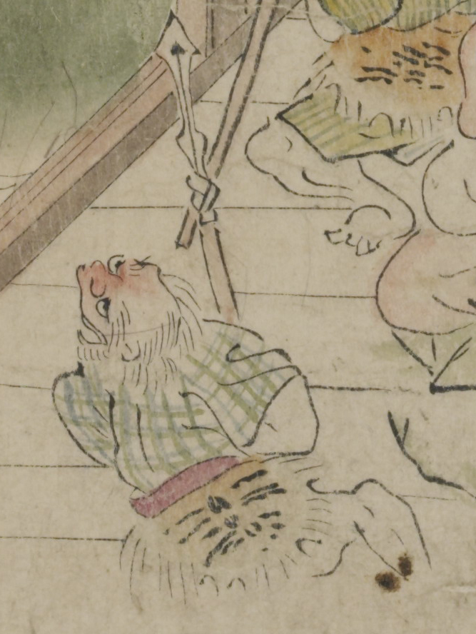

赤い顔の鬼。頭頂部は禿げ、後頭部から白髪を垂らし、顎ひげを生やしている。緑色の格子柄の着物を着て、毛皮と赤い帯を腰に巻いている。上を向いて、腕に矛を持っている。
著作者：坂本弥一郎徳定／出典：親書誌：U426_nichibunken_0080：伊吹山酒呑童子絵巻；イブキヤマシュテンドウジエマキ／日付：2007／資源識別子：U426_nichibunken_0080_0006_0004
Copyright (c)2010- International Research Center for Japanese Studies, Kyoto, Japan. All rights reserved.